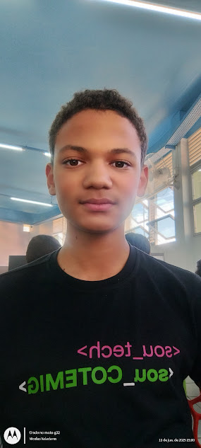
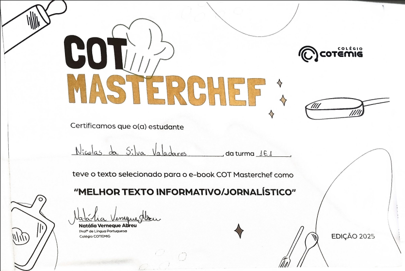
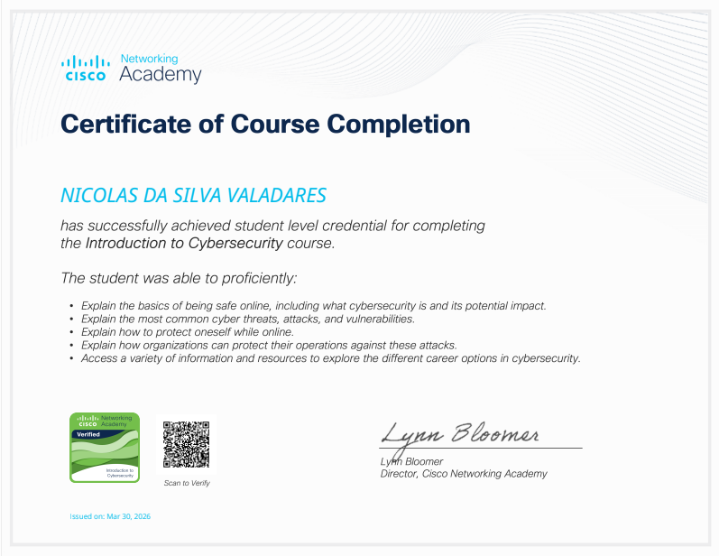

NIiCOLAS DA SILVA VALADARES
ESTUDANTE
-
CONTATO
- +55 31 989830623
- valadaresn78@gmail.com
-

Raposos-MG
-
HABILIDADES
Desenvolvimento Back-End em Python e C# (nível básico)
Desenvolvimento Front-End em HTML e CSS (nível básico)
Aprendizado rápido
Ferramentas Google (planilhas, drive, sala de aula, etc.)
Manutenção de Hardware
-
Linguagens
Português (Fluente)
Inglês (Intermediário)
Espanhol (Básico)
Russo (Iniciante)
-
PERFIL
Brasileiro, 16 anos; Tenho vontade de desenvolver melhor minhas habilidades técnicas e profissionais, como ter uma visão geral da empresa, saber negociar pequenas e grandes coisas, desenvolver meu pensamento sob pressão e em momentos difíceis. Gosto de pensar de forma lógica e de sempre procurar ser um destaque entre meus colegas. Sou uma pessoa sociável e reconheço que não sou capaz de nada sem o meu Deus presente comigo.
-
FORMAÇÃO ACADÊMICA
Ensino médio técnico em informática Colégio Cotemig, Belo Horizonte-MG 2025-Atualmente
Sou um aluno de destaque em minhas notas, principalmente na área de lógica e nas ciências exatas. Até o presente momento, recebi um prêmio de reconhecimento por participação de um texto selecionado para o e-book “COT Masterchef” como melhor texto informativo/jornalístico. Também completei um curso intensivo de Cybersegurança pela Cisco Networking Academy.
-
CERTIFICAÇÕES

